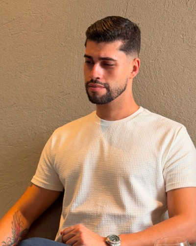
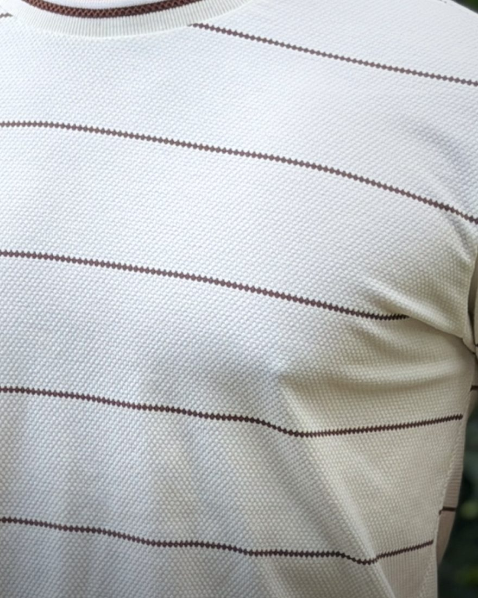
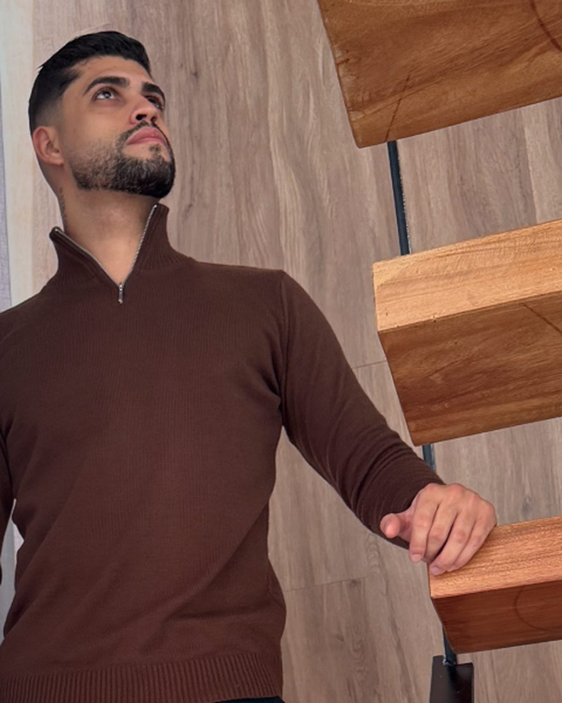
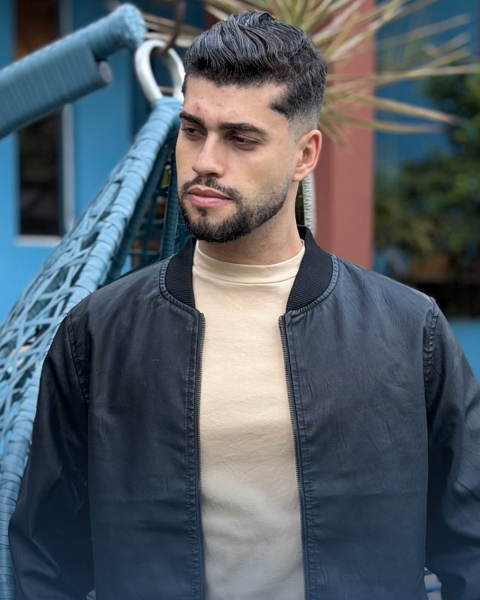

01
Você escolhe o caminho
Duas vias
São dois: personalizar peça de pronta entrega com a sua marca, ou desenvolver coleção do zero, com tecido, modelagem e ficha técnica.
Produção própria de roupa masculina para o lojista que quer vender marca própria, não o mesmo produto do vizinho.
Coleção nova com a condição dela junto. Sair é um toque, a qualquer momento.

Quem vai produzir a sua peça é esta fábrica, e estes são os números dela.
01O modelo
É assim que o modelo funciona: a peça chega pronta, com a marca de outra empresa, e a margem já vem calculada por quem vendeu. O lojista da rua de trás compra a mesma peça, pelo mesmo caminho, com a mesma sugestão de preço.
Quando o produto é igual, o que sobra para disputar é desconto.

Controle, margem e nome no mercado param de depender de fornecedor.
02A troca
Quando a marca é sua, a reputação da peça também é.

A mr produz a peça já com a identidade da sua marca aplicada.
Vale para peça de pronta entrega personalizada com a sua marca. Coleção desenvolvida do zero, com tecido escolhido, modelagem própria e ficha técnica, segue outro caminho, e o prazo e o pedido mínimo dela são definidos no projeto.
03O caminho
Um prazo só, e você sabe de onde ele começa a contar antes de aprovar a arte.
São dois: personalizar peça de pronta entrega com a sua marca, ou desenvolver coleção do zero, com tecido, modelagem e ficha técnica.
Enquanto a arte não estiver aprovada, ela ainda pode mudar. Depois que ela é aprovada, a produção roda com o que foi aprovado, e é daqui que o prazo começa a contar.
São 10 dias úteis de produção da peça de pronta entrega personalizada, contados da aprovação da arte. Produção, estampa e embalagem saem da mesma estrutura.
O lote fica pronto com a identidade da sua marca aplicada, no acabamento que foi aprovado no passo dois.

Linha de coleção · mr Inverno 2026
O que a mr faz está nomeado: tecido e modelagem, produção, estampa, embalagem e apoio de coleção. Esses são os entregáveis nomeados nesta página. O que não estiver aqui é conversa de projeto, não promessa.
04O grupo
Comece pelo grupo. Produção em 10 dias úteis a partir da aprovação da arte, a partir de 12 peças por cor, na peça de pronta entrega com a sua marca.
Entrar no grupo→É de lá que sai a condição de cada coleção, e é lá que a próxima produção começa.